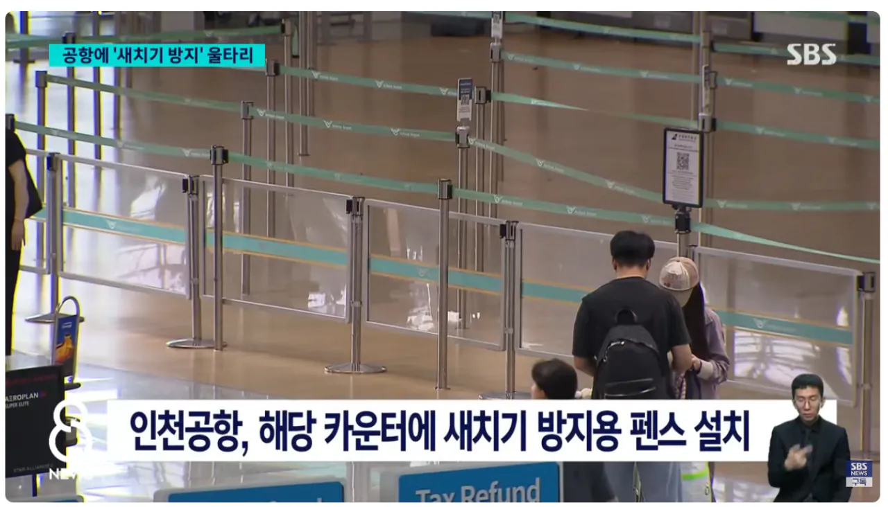
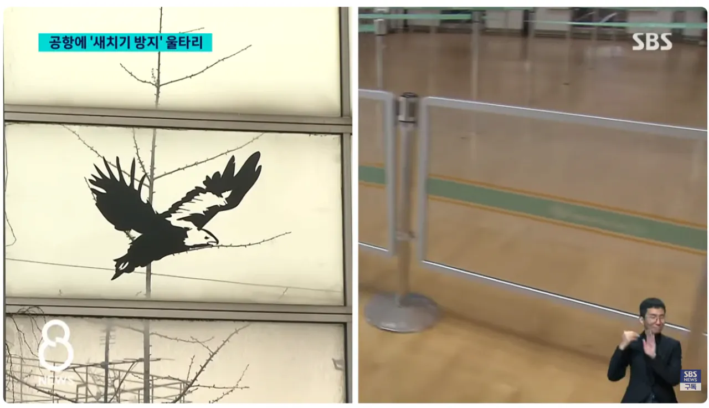

중국남방공항에만 유독 저런 탑승 수속을 위한 새치기가 빈번하게 일어나고
막으려던 직원들마저 다치는 상황 일어남
조류들마냥 부딪히지말라고 스티커까지 부착하고 효과는 있어보인다고 함
참고로 그 나라의 특정 항공사만 설치함 ㅋㅋㅋ


중국남방공항에만 유독 저런 탑승 수속을 위한 새치기가 빈번하게 일어나고
막으려던 직원들마저 다치는 상황 일어남
조류들마냥 부딪히지말라고 스티커까지 부착하고 효과는 있어보인다고 함
참고로 그 나라의 특정 항공사만 설치함 ㅋㅋㅋ
댓글
수집 당시 댓글 28개
메이 · 1 일 전
"짱"
K95Platinum · 1 일 전
팅탱통 화이팅!
핀펫 · 1 일 전
조류 ㅅㅂ ㅋㅋㅋㅋㅋ
십장생 · 1 일 전
버러지들 미워할만 하니까 미워하는 거다
개붕야호 · 1 일 전
직접본거만 공항에서 시끄러운새끼들 우르르가길래 뭔말인지 들어보니 중국인 ㅋㅋㅋㅋ 실실쪼개면서 막무가내로 새치기하는데 말하는거보니 또 중국인ㅋㅋㅋㅋㅅㅂ 공항새치기 대놓고하는건 그때첨봄ㅋㅋ
멍몽이 · 1 일 전
예전에 인천공항에 의자에 종이상자랑 팩 쓰레기 비닐 존나 많이 막 널려있길래 뭔가 했는데 중국애들이 포장 다 뜯고 버린 거였더라 ㅎ 그게 무려 10년전에도 이랬다..
반박해도내말이맞음 · 1 일 전
면세 수령하는곳가면 많이 보임 ㅋㅋㅋ
피스요 · 1 일 전
빨리 탄다고 먼저 출발하는것도 아닌데 왜 저러누
개구락지뒷다리 · 1 일 전
먼저 들어가야 라운지+면세점 더 쓰지
진정한이시대의야인 · 1 일 전
중국남방항공? 중구난방항공으로 개명해라 중구난방한 짱ㄲ새끼들아
그런데이것은틀렸습니다 · 1 일 전
중국애들만 저지랄 하니까 그냥 다른 나라 사람들은 안불편하게 핑핑이 사진 바닥에 깔아놓으면 되겠네
지드래곤 · 1 일 전
중국인들이 저러고 사는 게 누군가에게는 중국여행의 장점이 되기도 하더라. 한국에서는 사회적 체면 때문에 절대 하지 못할, 존나 못 배워쳐먹은 앰생폐급짓을 아무렇지 않게 막 하고 다녀도 현지인들 사이에서 위화감이 없어서 해방감을 느꼈다는 후기들이 은근 있음ㅋㅋ 어디에 있든 담배 피우고 싶으면 무조건 피우고, 사람들 많은데서도 방귀 뿡뿡 뀌고 트림 꺽꺽하고 오줌 마려우면 걍 길 가장자리 가서 싸지르고 더우면 걍 옷부터 벗어버리고 뭐 이런 거 그냥 자유롭게 막 해도 전혀 눈치 안 보여서 좋았다는 후기 봄ㅋㅋㅋㅋㅋㅋ 존나 웃기더라
그까이꺼대충 · 1 일 전
엠생들이 좋아하는거네
피스요 · 1 일 전
장가계 놀러갔는데 천문산 케이블카 타고 거의1500 까지 올라가서 내리자마자 중국인들 담배피니깐 한국사람도 같이 담배피더라 ㅋㅋ
천사초코 · 1 일 전
거기서 해방감 느끼신분들 제발 중국에서 평생 사셨으면..🙏
냉동블루베리 · 1 일 전
펜스에 시진핑 사진 붙여놓는 게 더 효과적이지 않을까
몽글 · 1 일 전
우즈벡이 제일심함
경찰청철창살쇠철창살 · 1 일 전
저거 우리나라에서만 저러는게 아니더라 일본가서 일본 입국장에서도 팬스 십여개 넘어서 대각선으로 가로질러서 새치기 갈기더라 미친놈들이 근데 병신여권이라 새치기 당한 내가 입국 더 빨리함 병신년들
팽드시에클 · 1 일 전
저거 처음 터졌을 때 ai 영상이라 우기던 애들이 웃겼음. 저게 일상인데 ㅋㅋㅋㅋ
알파드 · 1 일 전
사실은 AI라고 하는 애들이 AI 아님?
마견 · 23 시간 전
아뇨 AI라고 우기는 사람은 참입니다
깨어있음 · 1 일 전
참깨 디펜스
SunOfaBeach · 1 일 전
새치기는 미개한 쓰레기 짓입니다 중국어로만 써놔라
군터오딤 · 1 일 전
인스타에서도 중국인 아니라고 ㅋㅋㅋㅋㅋ 몰이하던데 ㅋㅋㅋㅋㅋㅋ 조선족 많이 늘었나보다 ㅋㅋㅋㅋ
오도짜세 · 1 일 전
짱
깊고어두운환상 · 1 일 전
바퀴벌레들 떼로 돌아다니는거 보는줄 ㅋㅋ
seoyo · 1 일 전
시진핑도 힘들겠어
웜뱃똥 · 1 일 전
쟤네는 새치기라는 단어 조차도 없을걸?